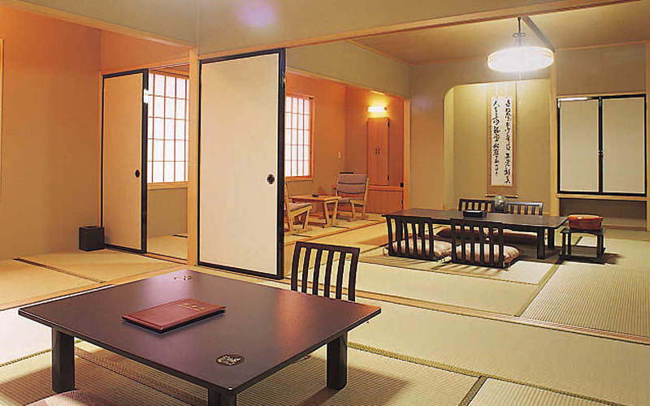
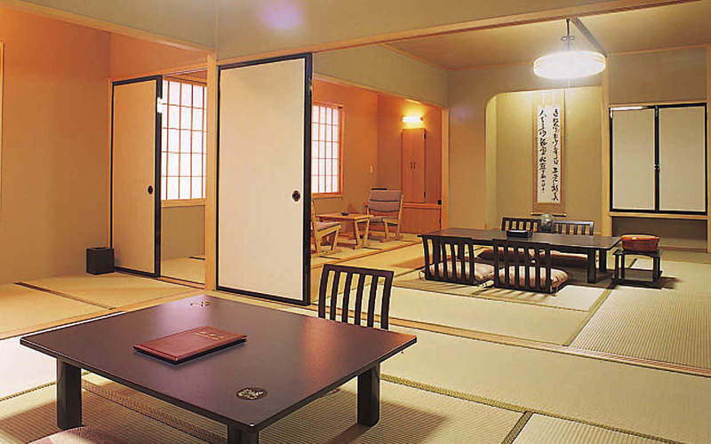

ホテル偕楽苑
 

盛岡の奥座敷、雫石町にこんこんと湧く鶯宿温泉の宿。自然の息吹に包まれ、素朴な風情の中に
日本情緒が漂う。効能豊かな湯は開放的な大浴場と、日本庭園風の空間に造られた露天風呂とで
愉しめる。特に宿の自慢はその露天風呂。緑深き裏山の景色を眺めながら、湯にじっくりと
浸かることができる。また、獲れたての山の幸や三陸の海の幸を生かした料理は逸品揃い。
観光情報
ジャンル
温泉・宿
所在地
岩手県岩手郡雫石町鴬宿第10地割3-1
電話番号
019-695-2111
[アクセス経路]
盛岡駅 → 【車32分】宿
盛岡駅 → 【電車52分】宿